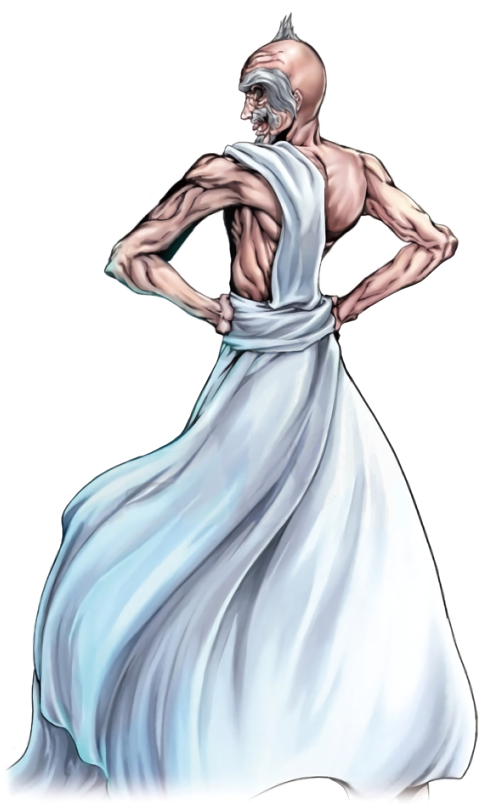

Selecione um personagem
- 
Adão
Adão foi o primeiro Homem, o homem criado por Deus à sua imagem e semelhança. A este foi atribuído autoridade para governar sobre todas as demais criações.
Adão foi o primeiro Homem, o homem criado por Deus à sua imagem e semelhança. A este foi atribuído autoridade para governar sobre todas as demais criações.